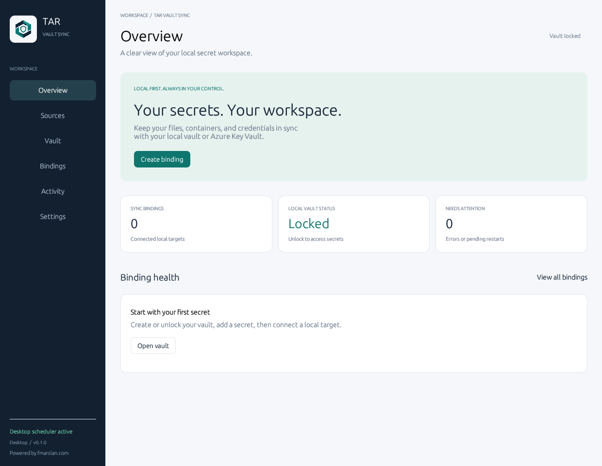
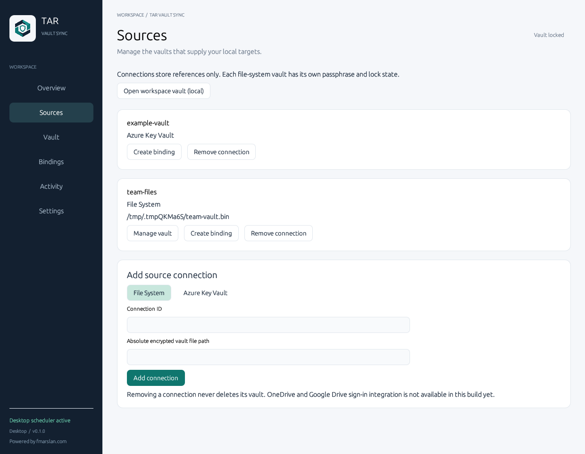
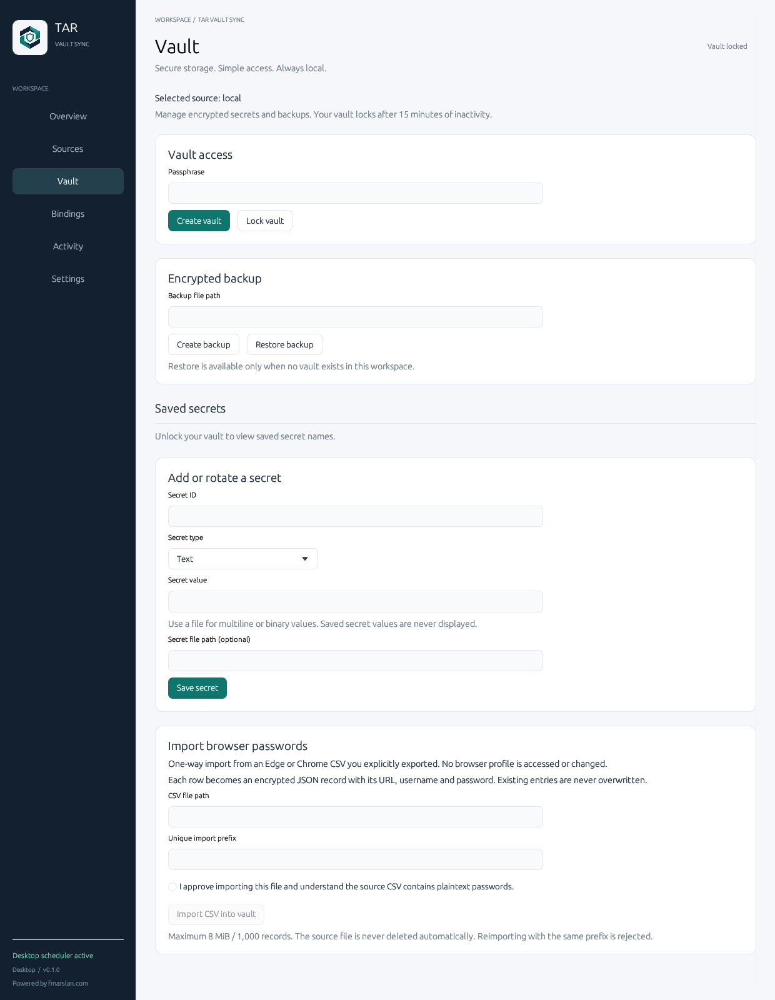
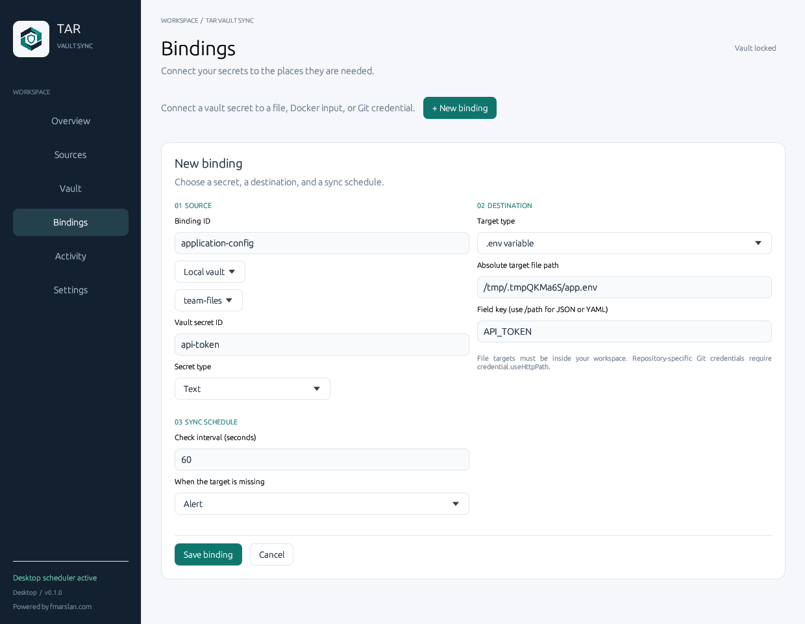
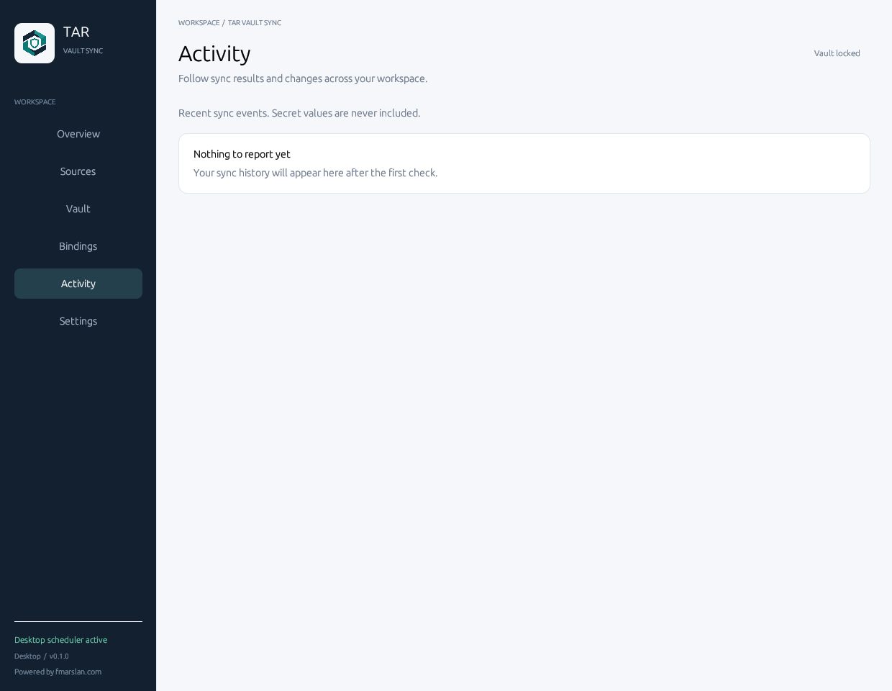
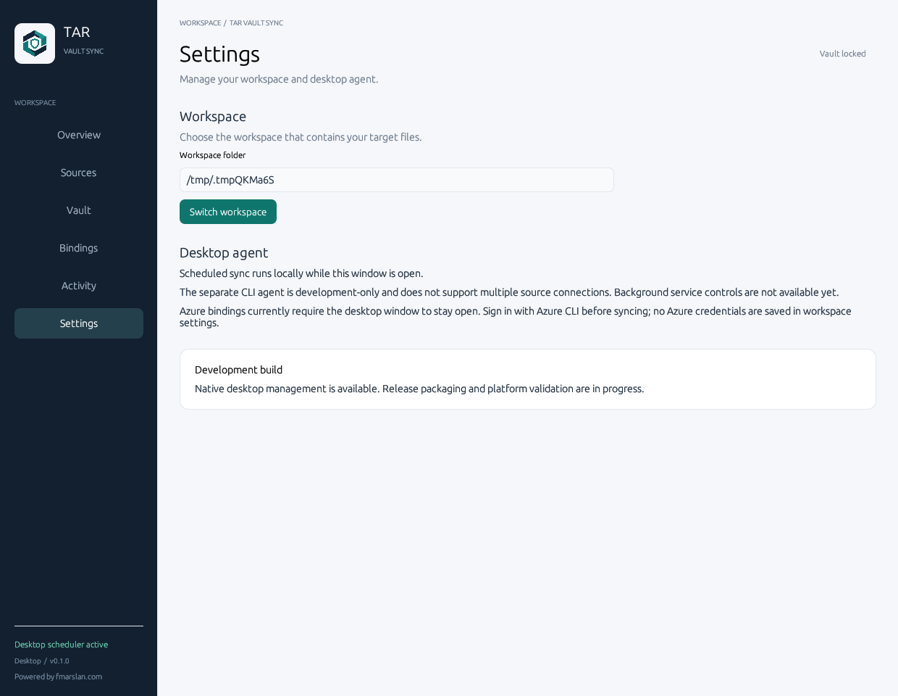

NATIVE DESKTOP · LOCAL-FIRST
Your vaults.
Your destinations.
Manage encrypted source vaults and distribute selected secrets to explicitly configured local targets. No browser-hosted management UI.
Development preview. This guide describes the development branch, not a production release. Cloud account registration is not evidence of a working connector. Read the status table before using a feature.
Start the desktop app
- Use a build for your operating system and architecture. Windows opens
tar-vault-sync.exe; macOS opensTAR Vault Sync.app; Linux runstar-vault-syncin a graphical session. - Launching without arguments opens the native desktop window. The website you are reading is documentation only.
- Open Sources to add a source, or Vault to create the default workspace vault.
- Open Bindings to connect a source entry to a target. Start with synthetic data and an isolated workspace.
- Keep the desktop window open for the current desktop scheduler.
Workspace locations
- Windows:
%LOCALAPPDATA%/tar-vault-sync - macOS:
~/Library/Application Support/tar-vault-sync - Linux:
${XDG_DATA_HOME:-~/.local/share}/tar-vault-sync
Set TAR_VAULT_SYNC_DIR to select an existing workspace. Target files must remain inside that workspace; file-system source vaults may be elsewhere.

HONEST CAPABILITIES
What is available?
| Capability | Current status | Important limit |
|---|---|---|
| File System source vaults | Implemented in development | Multiple encrypted vault paths; each must be unlocked separately. |
| Azure Key Vault | Limited connector; live Windows synthetic test passed | Public Azure, text secrets, existing Azure CLI sign-in; desktop scheduler only. |
| OneDrive source vaults | Not implemented yet | OAuth application registration exists; account connection, encrypted transport and conflict tests remain. |
| Google Drive source vaults | Not implemented yet | Desktop OAuth client exists; native authorization, secure credential storage and sync tests remain. |
| AWS / Google Secret Manager | Outside the current implementation scope | Not the same as Google Drive. |
| File / structured / Docker / Git targets | Development implementations | Docker writes signal restart required; containers are not restarted automatically. |
| Background service controls in UI | Not implemented yet | Desktop scheduler is not an installed operating-system service. |
| Cross-platform packages | CI build/test matrix | Build success is not native interactive acceptance, code signing or release approval. |
1. Add source connections
A source is where secret entries are stored. A binding chooses the source, entry and destination. Adding a source never grants new Azure permissions or reads an existing secret automatically.
File System
- Open Sources → Add source connection → File System.
- Enter a unique Connection ID, for example
team-files. The built-in IDlocalis reserved. - Enter an absolute encrypted vault file path. Its parent directory must already exist. Relative paths, parent traversal and file symlinks are rejected.
- Select Add connection, then Manage vault. Create a new vault or unlock an existing compatible vault.
- Select Create binding on that source to preselect it in the binding editor.
Connection references are saved in local/sources.json, never with passphrases or secret values. Removing a connection leaves its encrypted file intact. Connections referenced by bindings cannot be removed. Concurrent catalogue changes are rejected instead of overwritten.
Azure Key Vault
- Sign in to the intended Azure tenant using the official Azure CLI. Your administrator must already grant the required
secrets/listandsecrets/getaccess. - In Sources, choose Azure Key Vault and enter the existing vault name, not a URL.
- Create a binding and enter the secret name. Only text secrets in public Azure are currently supported.
- Use Sync now and inspect the binding outcome. An unchanged version does not fetch the value again.
Do not paste Azure access tokens into settings. The app obtains a short-lived token through the existing CLI session and retrieves values directly over HTTPS.

2. Manage an encrypted vault
- Check Selected source before each operation. Use Sources → Manage vault to switch vaults.
- Enter a passphrase and select Create vault for a new file, or Unlock vault for an existing file. The app clears the passphrase input after the operation.
- Add an entry with an explicit secret type. Text, JSON, binary data, certificates and private keys use the encrypted local-vault format.
- Editing an entry creates a new version. Bindings detect the new version on the next check.
- Use Lock vault when finished. Vaults also lock after 15 minutes of inactivity; scheduled reads count as activity.
Backup and recovery
Use an encrypted backup path you control. Recovery requires the correct passphrase and a new destination; it does not overwrite an existing vault. Back up the passphrase separately in a trusted password manager. Losing the passphrase can make encrypted data unrecoverable.
Browser CSV import
Import is explicit-consent and one-way. Export the CSV yourself, unlock the selected vault, choose the file and a unique import prefix, then approve the plaintext warning. Each record becomes encrypted JSON; existing entries are not overwritten. Limits: 8 MiB and 1,000 records. The original plaintext CSV is not deleted automatically. Continuous Edge/Chrome password-manager sync is not available.

3. Configure distribution bindings
- Open Bindings → New binding or select Create binding on a source card.
- Enter a unique Binding ID. Choose the source type and connection, then the entry ID or Azure secret name.
- Select the matching Secret type; Azure currently fixes this to Text.
- Choose a destination type and an absolute target path inside the workspace. Set the field key when the target is structured.
- Set the check interval and missing-target policy, then save.
- Select Sync now. Check Activity and the destination application; a successful write alone does not prove the consumer has reloaded its configuration.
| Target | Configuration |
|---|---|
| Whole file | Replaces the authorized file with exact payload bytes. |
| .env / Properties | Select a variable/property key; unrelated fields are preserved where supported. |
| JSON / YAML | Use the supported field pointer, such as /service/token. |
| Docker Compose | Choose the service/environment mapping. A changed input produces a restart notice. |
| Docker env_file | Specify the env file, Compose file and service reference. |
| Git Credential Manager | Configure HTTPS host, optional repository path and username. Requires GCM; not plaintext Git credential storage. |
Missing-target policies
- Alert: report a missing target without recreating it.
- Recreate: explicitly allow the target file to be created again.
- Disable binding: stop that binding until you explicitly enable it.

4. Inspect results and recover
Applied means a changed version was written successfully. Unchanged skips payload retrieval. Disabled requires explicit enablement. Restart required means the consumer needs your attention; acknowledging the notice does not restart Docker. Failed requires checking source access, vault lock state, target scope or format.
Events contain redacted metadata, not secret values. A failed render leaves the previous target unchanged. Version state advances only after successful application. Never paste secrets into an issue or diagnostics report.

5. Workspace and agent lifecycle
The current UI does not yet start, stop, restart or install a background operating-system service. The desktop owns its scheduler while the window is open. Closing the window stops that desktop scheduler. Do not rely on it for unattended delivery.
The separate CLI agent remains a development interface with test IPC authentication and a limited source configuration. It is not a secure production replacement for the requested service controls. Secure IPC, account-aware credential handling, restart/reconnect behavior and native lifecycle acceptance are required before this feature can be marked complete.
In Settings, inspect the workspace or open another workspace. Source vault paths may live outside the workspace; target files may not.

Security boundaries
- Local vault payloads are encrypted using Argon2id-derived keys and XChaCha20-Poly1305 authenticated encryption.
- Version metadata is checked before secret payload retrieval.
- Plaintext is transient, except when written to a target you explicitly configure. Protect those destination files separately.
- Configuration and state store references, versions and redacted outcomes—not secret values, passphrases or OAuth tokens.
- Files are rendered through temporary sibling files and atomic replacement.
- Cloud vault transport must authenticate encrypted data and reject conflicting revisions before it is considered complete.
This preview is not code-signed/notarized, audited or approved for production secrets. CI checksums detect changed archive bytes; they are not publisher signatures.
Troubleshooting
- Source connection cannot be added
- Use a unique safe ID and an absolute file path. Ensure the parent directory exists. Azure connection IDs must be valid vault names. A stale catalogue is deliberately rejected; reopen the app rather than overwriting someone else's change.
- Sync fails after reopening
- Vaults reopen locked. Unlock the exact source used by the binding. Azure requires a valid CLI session in the intended tenant.
- Target is rejected
- The target must be inside the configured workspace and match the chosen secret type. Check the parent folder and structured-field syntax.
- Source cannot be removed
- Remove or update its bindings first, and wait for an active manual sync to finish. Removing a connection does not delete the vault.
- Drive login is missing
- The OAuth registrations are prepared, but the desktop connectors are still pending. Do not use broader scopes or paste credentials into config files as a workaround.